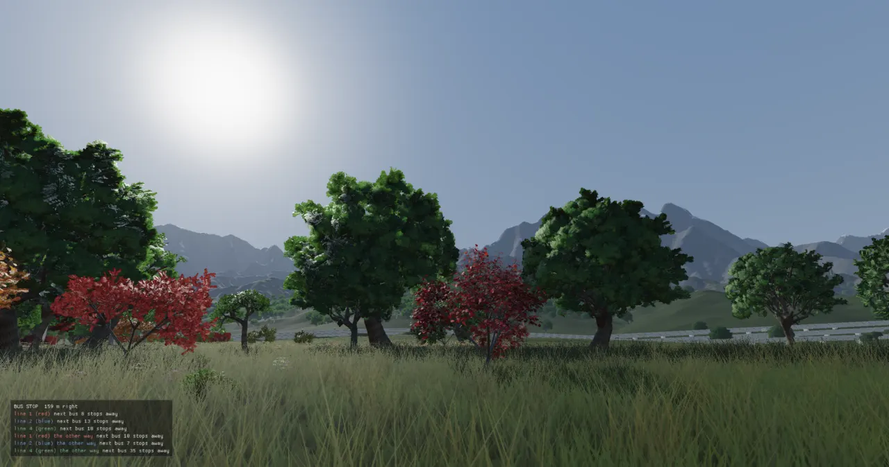
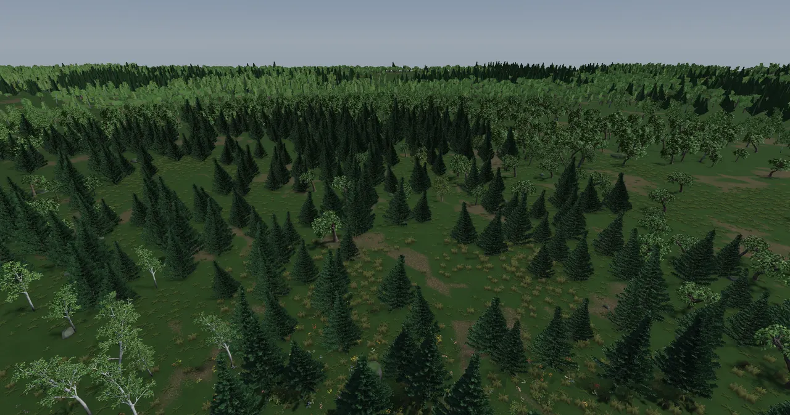

A frame on the GPU (and the path tracer)
Every frame, the engine walks the world, decides what can be seen, and turns that into a list of draws. One backend (Vulkan on Linux and Windows) then records the whole frame into one command buffer: shadow maps, a lit HDR scene, clouds, a handful of screen-space passes, and a composite that tone-maps the result onto the screen. The idea that holds it together is a small seam. The engine only ever says "draw this mesh with this material here". Everything the GPU needs is the backend's business.

Where it started: a CPU path tracer
The repository's first commit (d165c80b, 2026-06-01) was not a game engine. It was an offline
path tracer: a program that makes a picture by firing many random rays per pixel, bouncing each one
around the scene and averaging the light the bounces collect. "Cornell box with path tracing, glass, mirror,
KD-tree, and bilateral denoising", standard library only. The interactive Metal renderer arrived the same day
(3ba3ba60, "Add interactive Metal renderer with RHI abstraction and PBR shading"). Everything
else on this page grew from that second commit, but the tracer is still in the tree and still builds: the
raytracer CLI and the editor's in-process render both call one function,
renderImage, which renders rows of the image as jobs on the job system.
The tracer is the reference the realtime renderer is held to. Its PBR material uses the same GGX BRDF as the GPU shaders (ADR-0017), and it applies the same fitted ACES curve, so an offline render and a viewer frame can be compared. Two pieces of it are worth knowing. First, the camera is a thin lens: each ray starts at a random point on the aperture disk and aims at the point on the focal plane, so depth of field falls out of the averaging for free.
Ray Camera::generateRay(double u, double v, double lensU, double lensV,
double radialScale) const {
// Brown radial distortion (+ the caller's per-channel scale) on centered
// image coordinates; k1 = k2 = 0 and radialScale = 1 is exact passthrough.
double s = 2.0 * u - 1.0;
double t = 2.0 * v - 1.0;
double r2 = s * s + t * t;
double warp = radialScale *
(1.0 + lens.distortionK1 * r2 + lens.distortionK2 * r2 * r2);
u = (s * warp + 1.0) / 2.0;
v = (t * warp + 1.0) / 2.0;
Vec3 target = lowerLeft + u * horizontal + v * vertical;
Vec3 origin = position;
if (lensRadius > 0.0) {
double r = lensRadius * std::sqrt(lensU);
double phi = 2.0 * PI * lensV;
origin += r * std::cos(phi) * basisU + r * std::sin(phi) * basisV;
}
return {origin, normalize(target - origin)};
}
Second, the acceleration structures. The class is called KdTree, but it splits the
triangles into two halves at the median centroid of the longest axis, and each node keeps a box round its
triangles. That makes it a median-split bounding volume hierarchy (BVH), not a space-splitting k-d tree. ADR-0041
added a second level for instancing: a MeshProto (one mesh, its own tree, a "BLAS", bottom-level
acceleration structure) placed by many SceneInstances, with an InstanceBVH (the
"TLAS", top level) over the instances' world boxes. A ray is moved into the instance's frame. The geometry is
never copied into the world, so 600 street trees cost one tree's triangles.
The tracer's two-level query (src/scene.cpp, src/instance.cpp). The flat triangle soup and the instances live side by side, so scenes without instances render exactly as they did before ADR-0041.
// Map the world ray into the proto frame. Direction is NOT // renormalised, so `t` is identical in both frames. Ray localRay(inst.toLocal.transformPoint(ray.origin), inst.toLocal.transformDirection(ray.direction)); HitRecord tmp; if (proto.intersectLocal(localRay, tMin, closest, tmp)) { hit = true; closest = tmp.t; rec = tmp; rec.point = inst.toWorld.transformPoint(tmp.point); rec.normal = normalize(inst.normalToWorld.transformDirection(tmp.normal)); if (tmp.tangent.lengthSquared() > 1e-12) rec.tangent = normalize(inst.toWorld.transformDirection(tmp.tangent)); rec.t = tmp.t; }
Two tone curves. ADR-0037 gave the viewer a grade (contrast and saturation in
scene-linear light) and a choice of ACES or AgX. The offline tracer kept its own fitted ACES and gained neither,
so "viewer and offline tone now differ" (the ADR's own words). The per-channel ACES that came first washed colours
out; the fitted version with the input and output matrices replaced it in b7a8db97.
One seam, four backends
ADR-0001 (2026-06-03) made a rule before there was a second backend: platform details live behind two
seams, Window (windowing and input) and Renderer (the GPU). Renderer is a
pure virtual class in src/renderer/renderer.h. It is not a command-buffer abstraction. It uploads
resources and takes draw calls, and the backend builds and runs the whole pass graph inside
endFrame(). Engine code never sees a Vulkan or Metal type.
Who talks to the seam, and who implements it. Line counts are the backend source files at the pinned commit; each backend also has its own shader tree (shaders/vulkan, shaders/metal, WGSL embedded).
virtual void beginFrame() = 0;
virtual void setCamera(const CameraState& camera) = 0;
// ...
virtual void setLights(const SceneLighting& lighting) = 0;
virtual void drawMesh(MeshHandle handle, const Mat4& transform,
const RenderMaterial& material) = 0;
// Draw many instances of one mesh (world-space transforms, one material for
// all). Default loops drawMesh: backends that batch by mesh handle (the Metal
// backend) already coalesce these into a single instanced draw, so the win
// here is CPU-side (one InstanceGroup vs. thousands of entities). A backend
// may override for a more direct path. (std::span is C++20; we are C++17.)
virtual void drawMeshInstanced(MeshHandle handle,
const std::vector<Mat4>& transforms,
const RenderMaterial& material) {
// (a backend without instancing: the bottom row's per-instance DATA -- a grass rank and its ground's
// slope, a signal's state, read only by the Vulkan shaders -- must not reach its model matrix as a w)
for (Mat4 m : transforms) { m.m[3][0] = m.m[3][1] = m.m[3][2] = 0; drawMesh(handle, m, material); }
}
// ...
virtual void endFrame() = 0;
Notice the default drawMeshInstanced: a backend without instancing gets a loop of single draws.
It also clears the matrix's bottom row first. That row is where the engine smuggles per-instance data (a grass
clump's rank, a traffic signal's colour) to the Vulkan shaders, and it must not reach another backend as a
perspective w.
How the backends came in
| Backend | When | What decided it |
|---|---|---|
| Metal | 2026-06-01 | The first interactive renderer, on Glenn's Mac. Compiles MSL from strings at runtime. The engine's lighting (ADR-0017) was designed here first. |
| Vulkan | ADR-0057, 2026-06-27 | "One backend covers both targets", Linux and Windows. GLSL compiled
offline to SPIR-V by glslc in CMake, so the runtime links no shader compiler. Vulkan's flipped Y and
[0, 1] depth are absorbed in the projection upload, so engine math stays shared. WebGPU (Dawn, wgpu) was rejected
on the desktop as a heavy native dependency; OpenGL as a dead end. |
| WebGPU | ADR-0058, 2026-06-29 | The web build. Under Emscripten the dependency objection disappears: the toolchain ships the bindings. WGSL embedded as strings; single-threaded. |
| Null | — | Draws nothing. Lets tests and tools run the engine with no GPU. |
The price is three shader trees kept in step by hand, which ADR-0057 and ADR-0058 both name as the dominant long-term cost. In practice the Vulkan backend is the one Glenn runs (the Linux workstation with the RTX 3080), and since September most new rendering lands there first and says so: "Vulkan only" is in the text of ADR-0088, 0094, 0096, 0100, 0193 and 0226. docs/renderer-parity.md is the matrix of who has what. The rest of this page describes the Vulkan backend.
From the world to a command buffer
Application::renderFrame brackets a frame in three timed phases, named so a slow frame can say
where it was slow (ADR-0077): acquire (beginFrame), encode (the systems'
render calls walk the world and submit draws) and submit (endFrame, which on
Vulkan records and submits the GPU's work).
{
RT_PROFILE_ZONE_NAMED("acquire");
frameStats.beginPhase(FramePhase::RenderAcquire);
rendererPtr->beginFrame();
frameStats.endPhase(FramePhase::RenderAcquire);
}
{
RT_PROFILE_ZONE_NAMED("encode");
frameStats.beginPhase(FramePhase::RenderEncode);
stateStack.forEachRenderable([&](AppState& state) { state.render(ctx); });
frameStats.endPhase(FramePhase::RenderEncode);
}
{
RT_PROFILE_ZONE_NAMED("submit");
frameStats.beginPhase(FramePhase::RenderSubmit);
rendererPtr->endFrame();
frameStats.endPhase(FramePhase::RenderSubmit);
}
The CPU half of a frame on Vulkan. With MAX_FRAMES_IN_FLIGHT = 2, the fence wait in
endFrame is for the frame before last, so the CPU builds frame N while the GPU still draws N − 1.
The renderer is immediate mode for the draw list: nothing about a draw survives the frame. Every frame
the world is walked again, culled again, and every visible instance's matrix is written again into a per-frame,
host-visible instance buffer. Meshes and textures do stay on the GPU; only the list of what to draw is rebuilt.
That is simple and always correct, and it is also where the CPU's render time goes (see "What it costs"). The
unit of the list is the DrawItem:
struct DrawItem {
MeshHandle mesh;
MeshPush push;
std::array<TextureHandle, 5> textures; // albedo, MR, normal, AO, emissive
float opacity = 1.0f; // < 1 → transparent pass (back-to-front)
float sortPos[3] = {0, 0, 0}; // where it stands, for the transparent sort
bool terrain = false; // → terrainPipeline (CDLOD morph in vert)
// INSTANCED (ADR-0097): the model matrices are rows [firstInstance, +instanceCount) of the
// frame's instance buffer, read by the vertex shader at instance rate. drawMesh is a
// one-instance draw; drawMeshInstanced is one draw for the whole visible set.
uint32_t firstInstance = 0, instanceCount = 1;
// WHERE IT IS: a world bounding sphere round every instance (radius < 0: unknown, always drawn). The shadow
// cascades cull against it -- each cascade used to draw the whole frame's queue (the island: 9.7 ms of GPU,
// three times the recording)
float worldCenter[3] = {0, 0, 0};
float worldRadius = -1.0f;
// a GPU crowd kind: its instances are crowd.comp's (crowdInst) and its count an indirect command (crowdCmds)
bool crowd = false;
uint32_t crowdCmd = 0;
};
MeshPush is the 120-byte push-constant block the shaders read: albedo, metallic, roughness,
emission, the material flags (a 32-bit word of switches like FLAG_ALPHA_TEST,
FLAG_GRASS, FLAG_LOD_BAND), the procedural surface id (brick, asphalt, water…) and
16 floats of material features. Textures are bound per draw from a descriptor pool that is reset every frame.
The pass graph
A pass is one trip through the GPU's pipeline that writes some images; later passes read them. The order
and the image formats are fixed in recordCommandBuffer. The matrix below is the whole frame: one row
per pass in the order they run, one column per image, W where a pass writes it and R where it reads it.
The brackets on the left are the RT_GPU_TIMES buckets the timings come back in.
The Vulkan frame at commit 47d587f3, from recordCommandBuffer and the descriptor
writes that feed each pass. The composite reads the DOF image instead of the HDR one when depth of field is on,
and reads depth and normals for the underwater view and the debug views.
Here is the same order in the code, with the timestamp marks between the stages:
gpuMark(cmd, 0);
recordCrowd(cmd); // the far travellers' instances, before any pass draws them
// Cascaded shadow maps first (writes the depth array the lit pass samples).
recordShadowPass(cmd);
gpuMark(cmd, 1);
// ...
vkCmdEndRenderPass(cmd);
gpuMark(cmd, 2);
// Volumetric clouds (port of the Metal cinematic-sky wiring): half-res
// march, then the bilateral composite onto the HDR scene — BEFORE the post
// chain so SSR/bloom/DOF all see the clouded scene.
if (cloudsActive && cloudMarchPipeline && cloudCompositePipeline && cloudFramebuffer) {
// ...
// Bloom + SSAO read the scene outputs (always run so their views stay
// sampleable; composite gates whether they're applied).
gpuMark(cmd, 3);
recordBloom(cmd);
gpuMark(cmd, 4);
recordSsao(cmd);
gpuMark(cmd, 5);
recordSsr(cmd);
gpuMark(cmd, 6);
recordOcclusion(cmd);
// DOF (off by default) blurs the HDR scene; composite reads dofView when on.
if (dofEnabledFrame) recordDof(cmd);
gpuMark(cmd, 7);
// ...
vkCmdEndRenderPass(cmd);
gpuMark(cmd, 8);
Each pass in a sentence or two
| Pass | What it does, and why it is there |
|---|---|
| crowd.comp | The city's far travellers (the "GPU crowd") are placed by a compute shader from their route and clock, writing their instance matrices and an indirect draw count. It runs first, so every later pass can draw them. |
| Shadow cascades | Cascaded shadow maps: the view is cut into up to four depth slices, and
each gets its own 2048² depth map rendered from the sun, so near shadows are sharp and far ones still exist.
The boxes are fitted round the camera (cascade_fit.h), not the view direction, so turning does not
make shadows shimmer. Each cascade draws only the items whose sphere overlaps its four sides; grass, overlays
and the camera-facing impostor cards cast nothing. Alpha-cut leaves use a second pipeline that cuts the shadow
by the leaf texture's alpha. |
| Scene pass | The sky (a full-screen triangle from sky.frag: the day/night palette and
the sun disc), then the geometry, sorted by kind into opaque (back-face culled, then two-sided), terrain
(its own vertex shader, which morphs CDLOD tiles), water, transparent (sorted back to front, premultiplied
alpha), and overlays (depth off). All lit by mesh.frag. It writes three images: HDR colour, a
"G-buffer" of world normal and roughness for the screen-space passes, and depth. Depth is reverse-Z:
near is 1 and far is 0, which with a float depth buffer keeps precision nearly even out to kilometres. |
| Clouds | Volumetric clouds marched at half resolution against the scene depth, then upsampled bilaterally (edge-aware, so cloud does not bleed over a roof line) onto the HDR image. They go in before the post chain, so bloom and SSR see the clouded sky. |
| Bloom | Three half-resolution draws: a soft-threshold bright pass, then a horizontal and a vertical blur. The composite adds the result. |
| SSAO | Screen-space ambient occlusion: darkening creases and contact points by testing a hemisphere of samples round each pixel against the depth buffer. Half resolution, then a blur. |
| SSR | Screen-space reflections: each pixel's reflection ray is marched against the depth buffer; where it hits, the HDR colour there is the reflection, with a confidence that fades at screen edges and on rough surfaces. This is what puts the mountains in the lake below. |
| Occlusion reduce | The renderer's first compute pass: depth reduced to 16 px tiles for the CPU's occlusion culling (its own section below). |
| DOF | Depth of field, a thin-lens circle of confusion gathered at full resolution. Skipped unless the camera has a real aperture. |
| Composite | One full-screen draw into the swapchain: lens distortion and chromatic aberration, then AO (with a floor), SSR mixed in by its confidence, the underwater view, bloom, exposure, the grade and the tone map (ACES or AgX). Then the game UI layer (ADR-0088) and the ImGui debug overlay, in the same render pass. |


Shaders compiled but not drawn. CMake compiles atmosphere.frag,
star.frag, water.vert and water.frag (the procedural-planet passes) to
SPIR-V, but nothing in the Vulkan backend loads them at this commit. Water on Vulkan is drawn by
mesh.frag through the water pipeline (its Surface::Water and River code), and
the sky by sky.frag. The memory note on realism records the matching gotcha: the "scattering" sky
model is Metal only.
Lighting: one BRDF, one set of units
ADR-0017 (2026-06-10) found the lighting in two mismatched halves. Light from the sky (image-based lighting) was proper GGX physically based shading, but the sun and lamps were Blinn-Phong with no 1/π, about three times too hot, and shadows only darkened the direct term. Under a bright sky a fully shadowed pixel kept about 80% of its brightness. The fix had two commitments. One BRDF for everything: Cook-Torrance GGX specular (the GGX distribution, height-correlated Smith visibility, Schlick Fresnel), Lambert/π diffuse, and inverse-square falloff with a windowed range for lamps. And artistic shadow controls that act on visibility, so they hold whatever the shading model.
// ---- BRDF (ported from lighting.metal) ------------------------------------
float distributionGGX(float NdotH, float a2) {
float d = NdotH * NdotH * (a2 - 1.0) + 1.0;
return a2 / max(PI * d * d, 1e-6);
}
float visibilitySmithGGX(float NdotV, float NdotL, float a2) {
float gv = NdotL * sqrt(NdotV * NdotV * (1.0 - a2) + a2);
float gl = NdotV * sqrt(NdotL * NdotL * (1.0 - a2) + a2);
return 0.5 / max(gv + gl, 1e-5);
}
vec3 fresnelSchlickVec(float cosTheta, vec3 f0) {
return f0 + (1.0 - f0) * pow(clamp(1.0 - cosTheta, 0.0, 1.0), 5.0);
}
float distanceAttenuation(float dist, float range) {
float ratio2 = (dist * dist) / max(range * range, 1e-4);
float window = clamp(1.0 - ratio2 * ratio2, 0.0, 1.0);
return window * window / max(dist * dist, 1e-4);
}
vec3 evaluateLighting(vec3 worldPos, vec3 N, vec3 V, vec3 albedo,
float metallic, float roughness, vec3 f0, vec3 sunShadow) {
vec3 directLight = vec3(0.0);
float a = max(roughness * roughness, 0.002);
float a2 = a * a;
float NdotV = max(dot(N, V), 1e-4);
// ...
float NdotL = max(dot(N, L), 0.0);
if (NdotL <= 0.0 || attenuation <= 0.0) continue;
vec3 H = normalize(L + V);
float NdotH = max(dot(N, H), 0.0);
float VdotH = max(dot(V, H), 0.0);
float D = distributionGGX(NdotH, a2);
float Vis = visibilitySmithGGX(NdotV, NdotL, a2);
vec3 F = fresnelSchlickVec(VdotH, f0);
vec3 specular = D * Vis * F;
vec3 diffuse = (1.0 - F) * (1.0 - metallic) * albedo / PI;
vec3 sh = (type == 1) ? sunShadow : vec3(1.0); // only the sun casts shadows
directLight += (diffuse + specular) * light.colorOuter.rgb * (attenuation * NdotL) * sh;
}
The 32-light cap is real and shapes the city at night: RenderSystem picks the nearest street lamps
(20 by default within 160 m), station canopy lights, headlight cones, the flashlight, interior room lights and
roof beacons, and fades each lamp in and out as it crosses the edge of that set, so lights do not pop on as you
drive. The shader loops every light for every pixel, so this count is "the honest cost knob for night" (the
comment in render_system.cpp).
// Artistic shadow tint (ADR-0017): occluded direct light + ambient lerp toward // the tint; ambientStrength (shadowTint.w) controls how much the same shadow // darkens IBL (so a bright sky doesn't fill shadows back in). Tint 0 = plain // darkening, identical to the untinted scalar. vec3 directShadow = mix(vec3(1.0), g.shadowTint.rgb, (1.0 - sunVis) * strength); vec3 ambientShadow = mix(vec3(1.0), g.shadowTint.rgb, (1.0 - sunVis) * g.shadowTint.w);
On Vulkan the sky's light is analytic: the shader evaluates the procedural sky (or an HDR equirect) by normal
for the diffuse fill and along the reflection for specular, then applies the split-sum BRDF lookup table baked at
start-up (brdf_lut.frag). The baked, prefiltered cubemaps ADR-0017 Phase 3 describes are the Metal
path.

What it costs: RT_GPU_TIMES
Profiling the GPU needs timestamps written by the GPU itself. With RT_GPU_TIMES=1 the backend
writes a timestamp after each stage into a query pool per frame slot, reads it once that slot's fence has passed
(so it never stalls), and logs the average every 120 frames as a [gpu] line, together with the CPU
time inside endFrame: fence wait, recording, and submit + present.
// GPU PASS TIMES (RT_GPU_TIMES=1; Glenn: "get a breakdown"): a timestamp after each stage of the frame, one // query pool per frame slot, read when that slot's fence has passed (no stall). Logged every 120 frames. static constexpr int kGpuMarks = 9; // start, shadows, scene, clouds, bloom, ssao, ssr, occlusion+dof, composite+ui std::array<VkQueryPool, MAX_FRAMES_IN_FLIGHT> gpuTimePool{}; std::array<bool, MAX_FRAMES_IN_FLIGHT> gpuTimeWritten{}; double gpuTickNs = 0, gpuAccumMs[kGpuMarks] = {}; int gpuFrames = 0; double cpuWaitMs = 0, cpuRecordMs = 0, cpuQueueMs = 0; // endFrame's CPU: fence wait, recording, submit + present void gpuMark(VkCommandBuffer cmd, int k) { if (gpuTimePool[currentFrame]) vkCmdWriteTimestamp(cmd, VK_PIPELINE_STAGE_BOTTOM_OF_PIPE_BIT, gpuTimePool[currentFrame], static_cast<uint32_t>(k)); }
Two rules make the numbers mean something. Turn vsync off (RT_VSYNC=0): under FIFO presentation
every frame time is a multiple of the refresh interval, and ADR-0097 found both builds reading "exactly 50.0 ms" on
the test forest. And do not measure with the screen locked: the compositor throttles presentation and the GPU
idles (the render-profile memory note).
| Where | What was measured | Source |
|---|---|---|
| island_8_nature, the campus, 2560×1347, pinned eye | GPU 14.1 ms, of which shadows 9.7; SSAO + SSR + bloom + occlusion together under 0.5. The CPU spent 13.5 ms recording about 700 draws, because every cascade drew the whole queue. After the per-cascade cull: shadows 1.9, GPU 7.0, recording 0.95; frame 39 → 21.8 ms (about 26 → 46 fps). | commit fcbdb2bf |
| the same view, after | scene 3.3 ms, clouds 1.2; CPU encode (the world walk) 8.3 ms | render-profile memory note (session measurement, not in a commit) |
| recipe_forest, two held poses | GPU frame "Treetops" 36.7 → 10.8 ms, "Across the ridge" 18.2 → 7.0, after impostors from 150 m and thinner far levels; the many-view impostors themselves about 1 ms | ADR-0195 |
| island_8_nature, above a forest stand | 10.9 ms with the recipe trees, 10.7 with the real_tree forest | ADR-0197 |
The lesson the memory note draws is the one to keep: profile before guessing. Glenn suspected the post effects; they were nearly free. The cost was shadows, and the CPU rebuilding static things every frame.
for (const DrawItem& item : drawQueue) {
GpuMesh* m = meshes.get(item.mesh);
if (!m || m->indexCount == 0) continue;
if (item.crowd) continue; // far travellers: beyond the cascades' reach
if (item.worldRadius >= 0 && !shadowCullOff) {
bool out = false;
for (int pi = 0; pi < 4 && !out; ++pi)
out = planes[pi][0] * item.worldCenter[0] + planes[pi][1] * item.worldCenter[1] +
planes[pi][2] * item.worldCenter[2] + planes[pi][3] < -item.worldRadius;
if (out) continue;
}
// Debug-gizmo overlays (FLAG_OVERLAY), ground cover (FLAG_GRASS) and the camera-turned impostor cards
// (FLAG_IMPOSTOR_VIEWS: their shadow-only crossed cards cast theirs) cast no shadows.
if (item.push.surfaceFlags[1] & (RenderMaterial::FLAG_OVERLAY | RenderMaterial::FLAG_GRASS |
RenderMaterial::FLAG_IMPOSTOR_VIEWS)) continue;
Instancing: one draw for a forest
An instanced draw draws one mesh many times in one call, each copy with its own matrix. The engine's
InstanceGroup component (one mesh, one material, a list of world matrices) existed from early on, and
Metal batched it. Vulkan did not: it drew one vkCmdDrawIndexed per transform with the matrix in a push
constant, so every tree and grass patch cost a draw call. ADR-0097 made every Vulkan mesh draw read its model
matrix per instance from the frame's instance buffer (binding 1, locations 5 to 8 in mesh.vert).
A plain drawMesh is a one-instance draw: one path, not an instanced twin of every pipeline.
void VulkanRenderer::drawMeshInstanced(MeshHandle handle, const std::vector<Mat4>& transforms,
const RenderMaterial& material) {
// (bounds: the box round every instance's sphere, then the sphere round that box)
if (transforms.empty()) return;
// RT_NO_INSTANCING=1: one draw per instance, as before ADR-0097 (A/B frames and timings).
static const bool noInstancing = [] { const char* e = std::getenv("RT_NO_INSTANCING"); return e && e[0] == '1'; }();
if (noInstancing) { for (const Mat4& m : transforms) drawMesh(handle, m, material); return; }
// One draw for the whole set (ADR-0097): the material and the first transform (which the
// transparent sort reads) as drawMesh makes them, then every matrix into the instance rows.
drawMesh(handle, transforms.front(), material);
DrawItem& item = impl->drawQueue.back();
for (std::size_t i = 1; i < transforms.size(); ++i) impl->pushInstance(transforms[i]);
item.instanceCount = static_cast<uint32_t>(transforms.size());
| Scene (vsync off) | Draws | Frame time |
|---|---|---|
| instancing_forest (~7,400 trees, ~18,600 grass patches) | 9,750 → 178 | 11.0 → 2.95 ms |
| metro_planned downtown | 10,185 → 4,441 | 26.0 → 19.8 ms |
ADR-0097. The draws left on metro are unique meshes (building chunks, road cells), which instancing
cannot merge. RT_NO_INSTANCING=1 restores one draw per instance for A/B.
The instance matrix has a spare row. A world transform's bottom row is always (0, 0, 0, 1), so the engine uses it to carry per-instance data to the shader, and the shader puts the row back before using the matrix:
const bool grass = (pc.surfaceFlags.y & (1u << 17)) != 0u; // FLAG_GRASS // Grass clumps carry their random rank in the transform's bottom row (GrassSystem), and their ground's normal // (its x and z); every other mesh's is (0, 0, 0, 1). mat4 M = inModel; float rank = 0.0; vec2 groundXZ = vec2(0.0); if (grass) { rank = M[0][3]; groundXZ = vec2(M[1][3], M[2][3]); M[0][3] = 0.0; M[1][3] = 0.0; M[2][3] = 0.0; } // FLAG_SIGNAL_STATE (bit 20): a traffic signal whose STATE rides the bottom row (0 none, 1 green, 2 amber, // 3 red): the lamp of that colour glows (outColor pushed past 1: mesh.frag reads it as emission). One static // model per signal -- nothing about it is rebuilt but that number. const bool signalState = (pc.surfaceFlags.y & (1u << 20)) != 0u; float signalLit = 0.0; if (signalState) { const int st = int(M[0][3] + 0.5); M[0][3] = 0.0;
Every traffic signal on the island is therefore one static model plus a number. The price is a rule: any code
that reads an instance matrix (culling, bounds, every shader) must treat it as affine and never divide by
that row. frustumCullInstances learned that the hard way: dividing by a grass clump's rank moved its
culling sphere 4 to 140 m away, and looking down made the grass under you vanish (#50).
The draw index
Instancing cut the GPU's draw calls; the CPU still visited everything. The comment in
render_system.cpp records the island visiting ~27,000 entities and ~50,000 instance groups a frame to
draw ~340 and ~410, 6 ms of encode. DrawIndex (systems/draw_index.h) buckets static
drawables in 200 m cells; a frame tests the cells and visits only the members of visible ones, and a far cell
hidden whole behind nearer geometry is skipped (RT_NO_DRAW_INDEX=1 for A/B).
Two vertex layouts
Every mesh used to pay 56 bytes a vertex: float3 position, normal, tangent and colour, and a float2 UV. On metro_planned that was about 1.7 GB. ADR-0096 made a 32-byte standard vertex the default, kept the 56-byte one where the data needs it, and chose per mesh at upload.
The two layouts, drawn to scale (one byte = 14 px). An octahedral encoding folds a unit vector onto a square so two numbers hold it.
struct GpuVertexPacked {
float position[3];
int16_t normal[2]; // octahedral, snorm16
int16_t tangent[2]; // octahedral, snorm16
float texcoord[2];
uint8_t color[4]; // unorm8; alpha unused
};
static_assert(sizeof(GpuVertexPacked) == 32, "the standard vertex is 32 bytes");
// ...
enum class VertexFit { Packed, FullHdrColor, FullTangentData };
VertexFit vertexFitFor(const RenderMesh& mesh) {
if (mesh.tangentIsData) return VertexFit::FullTangentData;
for (const Vertex& v : mesh.vertices) {
const Vec3& c = v.color;
if (c.x < 0 || c.y < 0 || c.z < 0 || c.x > 1.0001 || c.y > 1.0001 || c.z > 1.0001) return VertexFit::FullHdrColor;
}
return VertexFit::Packed;
}
Two things decided the shape. Terrain's CDLOD tiles use the tangent slot for their morph target, a
position, so a mesh says so (RenderMesh::tangentIsData) and keeps the full layout. The ADR is
explicit that this is declared, not guessed from tangent length, because generators emit raw edge vectors 3 to 5 m
long. In the shader there is one mesh.vert with a kPackedVertex specialisation constant,
and every pipeline that reads mesh vertices has a packed twin; a draw binds the twin its mesh needs.
Packing moved off the render thread. The octahedral encode costs more than a
float copy, and packing on the render thread doubled a streamed detail cell's commit (11 → 24 ms). So
Renderer::prepareMesh packs on any thread with no device calls and uploadPrepared only
copies; the residency worker prepares building cells. A detail cell then committed in 1.7 ms (slowest 5.4). On
metro_planned the layout saved 641 MB; frames match the full layout to within 1/255 (ADR-0096). Later, ADR-0224
made the baked bundle store exactly this vertex, with the same encoders (engine/vertex_pack.h).
GPU memory
The RTX 3080 has 10 GB. On 2026-09-24 the new mem? command showed metro_planned holding 6.5 GB of
meshes in 25,394 separate allocations, one per vertex buffer and one per index buffer, and uploads started
failing near 9.85 GB although the data was 6.6 GB. The overhead was in the allocations, not the data. Four changes
the same day took the peak from 9.6 GB to 3.6 GB.
| Change | What it did | metro_planned |
|---|---|---|
ADR-0094 (979a1f16) | One allocator: AMD's Vulkan Memory Allocator suballocates meshes
and textures. One upload queue: a persistent 64 MB staging ring, one command buffer, submitted at the start of a
frame. Deferred destruction: a removed mesh is freed two frames later instead of
vkDeviceWaitIdle, which used to stall the GPU for every evicted terrain tile. | allocations 25,394 → 28 blocks; upload submits ~25,000 → 109; peak 9.6 → 8.1 GB (incl. ~1.6 GB of desktop); load 225 → 180 s |
ADR-0095 residency (b4d985ea) | GPU memory bounded by the camera, not the world:
engine::Residency streams building cells near the camera and lets far ones go, keeping the coarse
stand-ins. | all meshes 6.5 → 2.7 GB; peak 9.0 → 5.2 GB |
deck welds (7eeb25ea) | Road deck vertices shared between triangles; undersides only where a deck stands clear of the ground. | meshes 2.7 → 1.9 GB; peak 5.2 → 4.2 GB |
ADR-0096 (04d4d5fb) | The 32-byte standard vertex, plus the kerb pass that dropped hidden slab sides. | 641 MB saved; meshes 1,078 MB; peak 4.2 → 3.6 GB |
From the ADRs and commit messages. The peaks include the desktop's share of the card. Each row was measured on the build of its moment, so the figures do not chain exactly: the residency commit starts from 9.0 GB, not 8.1.
ADR-0224 is the disk side of the same story: island_8_nature's bundle fell from 8.59 GB to 1.62 GB by storing building parts and city cell meshes as the GPU's own vertex and compressing them with meshoptimizer, with the same look. Streaming itself (what is resident, and when) is a separate system.
Occlusion culling
Occlusion culling skips things hidden behind other things: the forest behind a hill, the city behind the building in front of you. Frustum culling alone cannot do that. ADR-0100 does it on the CPU against a recent frame's depth, with no waiting.
ADR-0100's loop. The depth is two to three frames old when it is read, so nothing ever waits on the GPU for it; the test is built to be conservative about that age.
void main() {
ivec2 o = ivec2(gl_GlobalInvocationID.xy);
if (o.x >= pc.outSize.x || o.y >= pc.outSize.y) return;
ivec2 base = o * pc.tile;
float farthest = 1.0;
for (int y = 0; y < pc.tile; ++y)
for (int x = 0; x < pc.tile; ++x) {
ivec2 p = min(base + ivec2(x, y), pc.inSize - 1);
farthest = min(farthest, texelFetch(depthTex, p, 0).r);
}
outBuf.depth[o.y * pc.outSize.x + o.x] = farthest;
}
bool occludedBox(const OcclusionDepth& o, const Vec3& loIn, const Vec3& hiIn, double slack) {
const Vec3 lo = loIn - Vec3(slack, slack, slack), hi = hiIn + Vec3(slack, slack, slack);
const Mat4& m = o.viewProj;
double x0 = 1e30, y0 = 1e30, x1 = -1e30, y1 = -1e30, nearest = -1e30;
// ...
if (cw <= 1e-4) return false; // reaches behind the eye: visible
const double iw = 1.0 / cw;
// ...
nearest = std::max(nearest, cz * iw); // reverse-Z: larger is nearer
}
if (nearest >= 1.0) return false; // at the near plane
// ...
if ((tx1 - tx0 + 1) * (ty1 - ty0 + 1) > kMaxTiles) return false;
for (int ty = ty0; ty <= ty1; ++ty)
for (int tx = tx0; tx <= tx1; ++tx)
if (nearest >= o.depth[static_cast<std::size_t>(ty) * o.width + tx]) return false; // not behind this tile
return true;
}
"Anything in doubt is visible" is the design rule: a box reaching behind the eye, one covering more than 48×48 tiles, or a camera more than 0.75 m or 2.5° from where the depth was drawn. The box is grown first by how far the camera has moved since (the slack), so parallax cannot uncover it. And a hidden thing still casts its shadow: a tree behind a ridge still shades the ridge.
if (occ && !(r.material.flags & RenderMaterial::FLAG_OVERLAY)) {
++occTested;
if (occludedBox(*occ, worldMin, worldMax, occSlack)) {
++occCulled;
// hidden from the camera, but its shadow may fall where the camera sees
if (r.material.opacity >= 1.0f && !(r.material.flags & RenderMaterial::FLAG_GRASS)) {
RenderMaterial shadowOnly = r.material;
shadowOnly.flags |= RenderMaterial::FLAG_SHADOW_ONLY;
ctx.renderer.drawMesh(r.mesh, model, shadowOnly);
}
return;
}
}
| Walk (tools/walk_probe.py) | Result |
|---|---|
| river_valley at 5 m/s | ~215 of 800 instance groups hidden a frame; median frame 4.6 → 4.1 ms (3.5 without the shadow-only draws, but shadows would pop) |
| metro_planned from the centre | ~10,000 of 10,500 entities hidden; main-pass draws 9,850 → 560; CPU render phase 7.2 → 6.4 ms |
ADR-0100. Screenshots match with occlusion on and off. Metal has no readback, so it culls by frustum only.
Levels of detail: impostors and tier crossfades
A level of detail (LOD) is a cheaper stand-in drawn when something is far away. The engine has two families, and both swap without a visible pop using the same trick.
Forests: models near, impostors far (ADR-0129, 0193, 0195)
An impostor is a flat card carrying a picture of the real object. ADR-0129 drew far trees as two crossed side cards and a top card, merged per 256 m cell (one draw per cell), with near trees instanced per 512 m cell. ADR-0193 replaced the crossed cards with many-view impostors: each tree variant is baked from 8 directions round it at 3 elevations (0°, 35°, 70°) into an atlas; the card turns to face the camera, and the fragment shader blends the four nearest baked views by the camera's direction in the tree's frame. A card that turns to the camera cannot cast a sensible shadow, so the shadow pass skips it and two shadow-only crossed cards cast it instead. ADR-0195 then measured recipe_forest at about 27 fps and counted about 120 million triangles a frame, and the shadow pass again; impostors from 150 m and thinner needle cards took the GPU frame from 36.7 to 10.8 ms.

The dither band
Crossfading two opaque models with alpha blending would need sorting and would double the cost. Instead
FLAG_LOD_BAND gives a draw a distance band and dithers it: across the band each pixel is kept
or discarded by a 4×4 Bayer threshold (a fixed pattern of 16 thresholds that reads as a fine screen door).
The outgoing model keeps pixels under its share, the incoming one pixels above; because the tests are
complementary, every pixel goes to exactly one of them.
Left: which pixels each tier keeps when each holds half. Right: the city tier crossfade drives the share by time, not by distance.
// FLAG_LOD_BAND (bit 19, ADR-0129): drawn only inside a distance band, dithered at its edges, so a // near model and its far impostor crossfade per pixel (features[3] = in0, in1, out0, out1) if ((pc.surfaceFlags.y & (1u << 19)) != 0u) { const vec4 b = pc.features[3]; const float d = distance(inWorldPos, g.cameraPosition.xyz); // a 4x4 Bayer threshold: the band reads as a fine screen-door, not noise const float bayer[16] = float[16](0.0, 8.0, 2.0, 10.0, 12.0, 4.0, 14.0, 6.0, 3.0, 11.0, 1.0, 9.0, 15.0, 7.0, 13.0, 5.0); const ivec2 q = ivec2(gl_FragCoord.xy) & 3; const float thr = (bayer[q.y * 4 + q.x] + 0.5) / 16.0; // COMPLEMENTARY edges: a fade-OUT keeps the pixels under its threshold, a fade-IN those above // (1 - thr), so a model fading out and its impostor fading in over the same band split every // pixel between them. Both testing the same threshold kept the same pixels and dropped the rest: // mid-band half the pixels showed neither -- a see-through ring of trees (review, #rendering). if (b.y > b.x && smoothstep(b.x, b.y, d) <= 1.0 - thr) discard; if (b.w > b.z && 1.0 - smoothstep(b.z, b.w, d) <= thr) discard; }
A see-through ring. The comment above records the bug that made the thresholds
complementary: both tiers first tested the same threshold, so mid-band they kept the same pixels and dropped the
rest, and half the pixels showed neither model. The test a_tier_crossfade_splits_every_pixel_between_the_two_tiers
guards it now.
City tiers crossfade in time (ADR-0226)
A building cell (250 m) has three tiers: full detail, flat facades from 300 m, a mass-box stand-in from 950 m.
The switch used to happen in one frame, a whole cell at a time. A spatial band would have drawn a cell's detail out
to ~480 m and discarded most of it, about 2.5× the detail cells. So the fade runs over time: when a cell's
distance test flips while it is on screen, RenderSystem fades it over 0.35 s and expresses the share
as a band so wide (100 km) that the same share holds at every pixel of the cell. No shader change.
void tierFadeBand(RenderMaterial& m, double dist, float share, bool coming) {
// the dither's share as a band so wide (kBand) that it reads the same at every pixel of a cell: smoothstep(e0,
// e0 + kBand, d) = s at d = dist when e0 = dist - t kBand, t = smoothstep^-1(s). Coming in keeps the pixels the
// band's fade-in keeps (a share `share`), going out those its fade-out keeps: complementary thresholds
// (mesh.frag), so a pair at shares a and 1 - a covers every pixel once.
constexpr double kBand = 1.0e5;
auto inv = [](double s) { return 0.5 - std::sin(std::asin(1.0 - 2.0 * s) / 3.0); };
m.flags |= RenderMaterial::FLAG_LOD_BAND;
const double e0 = dist - inv(coming ? share : 1.0 - share) * kBand;
if (coming) { m.lodIn0 = static_cast<float>(e0); m.lodIn1 = static_cast<float>(e0 + kBand); m.lodOut0 = m.lodOut1 = 0.0f; }
else { m.lodOut0 = static_cast<float>(e0); m.lodOut1 = static_cast<float>(e0 + kBand); m.lodIn0 = m.lodIn1 = 0.0f; }
}
Measured on an island_8_nature flight (40 m up, 30 m/s): p50 13.9 / p99 24.6 ms with the fades, 14.0 / 24.8
without. RT_NO_TIER_FADE=1 pops as before; RT_TIER_FADE_S=6 slows a fade enough to see
it in a screenshot. Vulkan only: Renderer::supportsLodBand() is false elsewhere, and without the band
both tiers would draw whole at once.
Moving instances drawn between steps (ADR-0240)
The simulation runs at a fixed 60 Hz; the screen runs at whatever it runs. Entities are drawn between their last
two steps' poses by the frame's interpolation alpha. Instance groups had no such thing, so the city's
cars, baked into groups in the fixed step, froze on every frame that ran no step: at 75 fps, 60 of 300 frames
(Glenn: "buses and cars sometimes shake. Their position is not stable. Trains actually appear very stable in
contrast"). Trains were placed per frame, which is why they glided.
Now an InstanceGroup can name its instances (ids), keeps the last bake beside this one,
and RenderSystem blends each named instance between them. A car body is keyed by its id; its glass,
driver, riders and lamps take the body's id plus a part number, so they move as one.
const std::vector<Mat4>* drawn = &g.transforms;
static const bool noLerp = std::getenv("RT_NO_INSTANCE_LERP") != nullptr; // the A/B: as baked
if (!noLerp && !g.ids.empty() && g.ids.size() == g.transforms.size() && !g.prevTransforms.empty() &&
g.prevIds.size() == g.prevTransforms.size() && alpha < 1.0) {
lerpScratch_.resize(g.transforms.size());
// ...
Mat4& out = lerpScratch_[i];
out = g.transforms[i];
if (!from) continue; // new this step: where it is
// a step apart is a few centimetres and a degree or two: blending the matrix is the blend of
// the poses (the columns stay a rotation to well within a pixel); a jump (a placement, a
// teleport) is drawn where it landed
const Real jx = out.m[0][3] - from->m[0][3], jz = out.m[2][3] - from->m[2][3];
if (jx * jx + jz * jz > 25.0) continue;
for (int r = 0; r < 3; ++r)
for (int c = 0; c < 4; ++c)
out.m[r][c] = from->m[r][c] + (out.m[r][c] - from->m[r][c]) * alpha;
}
drawn = &lerpScratch_;
}
| Camera jerk in the bus's own frame (bus 41, 600 frames) | before | after |
|---|---|---|
| third person | 65.1 mm | 1.5 mm |
| first person | 128.3 mm | 14.8 mm |
ADR-0240. Frozen frames for vehicles and the camera: 60 → 0. RT_NO_INSTANCE_LERP=1 is the
A/B. The remaining 15 mm in first person is open in the ADR.
Debug lines and the game UI: two things drawn on top
Debug draw (ADR-0067) lets any system scribble lines, boxes, spheres and axes into
FrameContext::debug. Rather than writing a line pipeline for three backends,
buildDebugLineMesh bakes the list into camera-facing ribbon quads whose width grows with distance (so
they keep a roughly constant thickness on screen), and DebugDrawSystem draws that as one ordinary mesh
with FLAG_OVERLAY. It worked on every backend the day it landed, with zero backend code.
class DebugDraw {
public:
struct Line {
Vec3 a, b;
Vec3 color;
Real ttl; // seconds left; <= 0 means "this frame only"
};
void line(const Vec3& a, const Vec3& b, const Vec3& color,
Real seconds = 0);
// ...
// Bake a line list into camera-facing ribbon quads (two triangles per line),
// wound to front-face the camera per the engine's clockwise convention, line
// color in Vertex::color. Ribbon half-width scales with distance to the
// camera so lines keep a roughly constant on-screen thickness;
// `pixelScale` ~ halfWidth per meter of camera distance. Degenerate
// (zero-length) lines are skipped.
RenderMesh buildDebugLineMesh(const std::vector<DebugDraw::Line>& lines,
const Vec3& cameraPosition,
Real pixelScale = 0.002);
The game UI layer (ADR-0088) is the opposite case. FLAG_OVERLAY meshes go through the lit HDR
pipeline, so exposure, bloom and fog would act on a map held up at dusk. Renderer::submitUi takes a
list of textured quads in screen pixels, and Vulkan draws them in the composite pass after the tone map and before
ImGui. The map, the HUD and the wrist watch's dial all submit through it. Metal and WebGPU draw nothing for it
yet.
How it got here
June: Metal first, the seam before the second backend. The path tracer and the Metal viewer shared the first day; ADR-0001 set the seams two days later. ADR-0017 unified the lighting on Metal and ADR-0037 found SSAO costing ~33 ms at full resolution (toggling it took the arena from 20 to 60 fps) and moved it to half resolution, where SSR already ran. On Vulkan today AO, SSR, bloom and the cloud march all run at half resolution. Vulkan (ADR-0057) and WebGPU (ADR-0058) followed at the end of June, each built in slices: clear screen, lit mesh, forward, shadows, post, instancing and terrain.
September 24: memory and draw calls. In one session: one allocator and upload
queue (ADR-0094), residency (ADR-0095), the standard vertex (ADR-0096), instancing on Vulkan with the test forest
that measures it (ADR-0097), and occlusion culling (ADR-0100). metro_planned's peak went from 9.6 to 3.6 GB. The
common thread: each fix came with a measuring tool first (mem?, walk_probe.py,
instancing_forest.json).
October: measuring the GPU itself. RT_GPU_TIMES (fcbdb2bf,
2026-10-05) showed shadows at 9.7 ms of a 14.1 ms GPU frame because every cascade drew everything; the per-cascade
cull fixed it. Then the forests (ADR-0193, 0195), the city tier crossfade (ADR-0226, during the island streaming work
of 2026-10-23) and moving instances (ADR-0240).
What is still open, from the notes and ADRs: the draw list is rebuilt every frame (the render-profile note names retained static instance buffers and GPU-driven culling with indirect draws as the next lever); Metal and WebGPU lack the Vulkan-only features above; camera-relative rendering (ADR-0095) is planned but not built, which is why positions stay 32-bit floats in the vertex.
Where to look
- src/renderer/renderer.h — the seam:
Renderer,RenderMaterialand its flags,RenderMesh,OcclusionDepth - src/renderer/vulkan/vulkan_renderer.cpp — the Vulkan backend;
recordCommandBufferis the pass graph,drawFramethe CPU side - shaders/vulkan/ —
mesh.vert/mesh.frag(all lit surfaces),terrain.vert,sky.frag,clouds*.frag,ssao*.frag,ssr.frag,bloom.frag,dof.frag,composite.frag,ui.*,occlusion_reduce.comp,crowd.comp - src/engine/systems/render_system.cpp — culling, lamps, LOD distances, tier fades, instance interpolation
- src/engine/occlusion.h/.cpp — the occlusion test
- src/renderer/cascade_fit.h — the shadow cascade fit (test:
tests/test_cascade_fit.cpp) - src/engine/debug_draw.h — debug lines (test:
tests/test_debug_draw.cpp) - src/path_tracer.cpp, src/camera.cpp, src/kdtree.cpp, src/instance.cpp — the offline tracer (test:
tests/test_instance_tlas.cpp) - tests/test_instancing.cpp — includes the tier crossfade pixel-split test;
tests/test_scatter.cpphasimpostor_views_frame_the_tree_from_every_side - docs/renderer-parity.md — which backend has what; docs/rendering.md (July; older) and docs/world-streaming-plan.md
- docs/decisions.md — ADR-0001, 0017, 0037, 0041, 0057, 0058, 0067, 0088, 0094–0097, 0100, 0129, 0193, 0195, 0224, 0226, 0240
Test beds and switches
| Switch or tool | What it does |
|---|---|
RT_GPU_TIMES=1 | the [gpu] pass-time line every 120 frames |
RT_VSYNC=0 | present without vsync (MAILBOX, else IMMEDIATE), for any timing |
RT_DUMP_STATS=1 | draws, instances, triangles, shadow casters; the [encode] walk; fading draws |
RT_DUMP_DRAWS=1 | one-shot audit of every renderable's bounds and cull verdict |
RT_NO_SHADOW_CULL, RT_NO_INSTANCING=1, RT_NO_OCCLUSION=1, RT_NO_DRAW_INDEX, RT_NO_TIER_FADE, RT_NO_INSTANCE_LERP, RT_VERTEX_FULL=1, RT_IMPOSTOR_VIEWS=0 | the A/B switches for each change on this page |
RT_OCC_STATS=1 | what occlusion culled, every 120 frames |
RT_NO_ROADS / _BUILDINGS / _SIM / _FOLIAGE | hide a class of geometry and read the difference off the stats |
mem? (control channel) | GPU heaps, mesh bytes per vertex layout, upload totals |
tools/walk_probe.py, tools/fly_probe.py | walk or fly the camera along a path and list the frames that hitch |
assets/levels/instancing_forest.json, forest.json | many light instances (draw-call bound) vs a few heavy trees (GPU bound) |